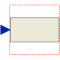

NumericValueShow value of Real input signal dynamically |

|
Parameters (2)
| precision |
Value: 3 Type: Integer Description: Number of significant digits to be shown |
|---|---|
| hideConnector |
Value: false Type: Boolean Description: = true, if connector is not shown in the dynamic object diagram |
Connectors (1)
| Value |
Type: RealInput Description: Real value to be shown in icon |
|---|
Used in Examples (1)
|
Modelica.StateGraph.Examples Example to demonstrate parallel and alternative execution paths |